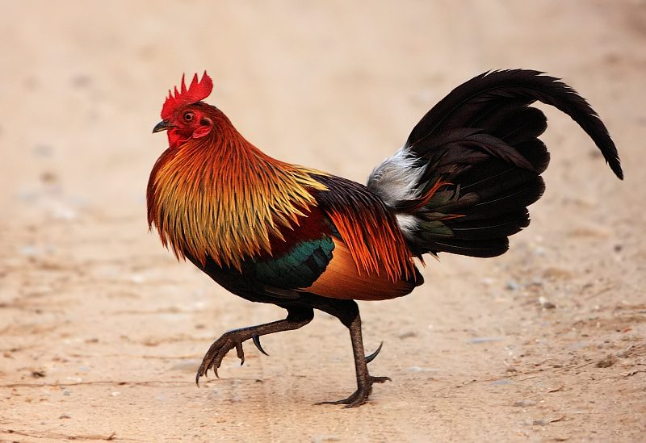

जंगली मुर्गाRed Junglefowl
Gallus gallus · Phasianidae · BRD-0312

- Scientific name वैज्ञानिक नाम
- Gallus gallus (Linnaeus, 1758)
- Family कुल
- Phasianidae
- Hindi हिंदी
- जंगली मुर्गा
- Local names स्थानीय नाम
- jungli murgha, bun murgha, red junglefowl
- Status here यहाँ की स्थिति
- native
- Movement आवागमन
- Resident, here all year
- Known from कहाँ दर्ज
- Others have published records from the Basti–Ayodhya districts बस्ती–अयोध्या के ज़िलों से दूसरों के प्रकाशित अभिलेख
- IUCN IUCN
- LC
- Review समीक्षा
- not yet reviewed
When to look कब देखें
Present all year. साल भर मौजूद।
Tell it apart from इनसे अलग पहचानें
जंगली मुर्गा / Red Junglefowl
Gallus gallus (Linnaeus, 1758) — Phasianidae
जंगली मुर्गा — उत्तर भारत के तराई और साल के घने जंगलों में रहने वाला एक अत्यंत सतर्क और फुर्तीला पक्षी है, जिसे घरेलू मुर्गियों का सीधा पूर्वज माना जाता है। यह सुबह और शाम के समय बांस की कोठियों, घने झाड़ियों और जंगल से सटे खेतों की मेड़ों पर दाना चुगने निकलता है। नर पक्षी के सिर पर चमकदार लाल कलगी, गर्दन पर सुनहरे-लाल नुकीले पंख (हैकेल्स) और लंबी घुमावदार हरी-काली पूंछ होती है। यह जंगल में जरा सी आहट पाते ही तुरंत घने पेड़ों की शाखाओं पर उड़कर छिप जाता है।
Quick Identification त्वरित पहचान
| Feature | Description |
|---|---|
| Habit | Cursorial gamebird inhabiting sal forests and dense undergrowth |
| Male Plumage | Fiery golden-red neck hackles, dark maroon mantle, glossy green-black arched tail |
| Female Plumage | Cryptic mottled rufous-brown, finely vermiculated with dark brown |
| Head Adornments | Male has erect fleshy red comb and pendulous throat wattles; white ear-patch |
| Tail | Long, arched, laterally compressed sickle feathers in male; short in female |
| Tarsus | Long, slate-grey to greenish-grey; male armed with a sharp curved spur |
| Carriage | Slender, horizontal, horizontal tail carriage differing from heavy domestic breeds |
Field tip: Look along forest firelines and crop edges adjoining sal forest at dawn and dusk. The wild cock is distinguished from feral domestic fowl by its slender build, grey legs (never yellow), horizontal tail carriage, white ear-lappet, and post-nuptial eclipse moult.
हिंदी:
नर पक्षी के सिर पर लाल कलगी, गर्दन पर सुनहरे लाल लंबे पंख और पूंछ पर मुड़े हुए काले-हरे पंख होते हैं।
मादा हल्के कत्थई-भूरे रंग की होती है जो सूखी पत्तियों में बिल्कुल घुल-मिल जाती है।
इसके पैर सलेटी रंग के होते हैं और घरेलू मुर्गों से अलग यह बहुत तेजी से उड़ सकता है।
Morphology आकारिकी
Measurements as given by Baker (1928 as Gallus bankiva):
| Measurement | Range |
|---|---|
| Wing | 203–244 mm (Baker 1928) |
The Red Junglefowl is a medium-sized phasianid with marked sexual dimorphism. In adult males, the crown, nape, and long neck-hackles are fiery orange-red shading to golden-yellow on the lower neck. The mantle and lesser wing-coverts are rich dark maroon-red. The lower back and rump hackles are fiery orange-red with concealed black bases. The upper tail-coverts and the strongly arched central tail feathers are glossy metallic green-black.
Females are cryptically colored: the crown is blackish-brown edged with golden-yellow, the neck-hackles are golden-yellow with broad black central stripes, and the upper plumage is reddish-brown finely vermiculated with dark brown and pale shaft-streaks.
The bill is dark horn-brown with a reddish base. The iris is orange-red to brown. The comb and wattles of the male are bright red, and the bare facial skin is crimson. The legs and feet are slaty-grey or leaden-olive.
Vocalisations. The cock utters a loud, ringing territorial crow cock-a-doodle-doo, noticeably abruptly truncated compared to domestic roosters. When startled, birds utter a frantic cackling clatter tuk-tuk-tuk-tuk-kawk.
हिंदी:
नर के पंखों की लंबाई 203 से 244 मिमी होती है।
नर के सिर पर मांसल लाल कलगी और गले पर लटकते हुए लाल गलकंबल होते हैं।
सुबह के समय नर पक्षी 'कुकड़ू-कूं' की तेज बांग देता है जो अंत में अचानक कट जाती है।
Behaviour & Ecology व्यवहार और पारिस्थितिकी
Gallus gallus is a shy and terrestrial resident of primary and secondary sal (Shorea robusta) forests. It lives in small harems consisting of an adult cock and a few hens, or in small bachelor parties outside the breeding period. Birds emerge from dense forest thickets at dawn and late afternoon to scratch among leaf litter and forage along forest edges and fallow fields.
They are swift runners that prefer escaping on foot when danger approaches, dodging skillfully through dense bamboo clumps. If pressed closely or surprised by a predator, they launch into strong, explosive flight with rapid wingbeats, flying directly up into the mid-canopy of trees to roost.
हिंदी:
यह पक्षी जंगल में जमीन पर सूखी पत्तियां खुरचकर कीड़े और बीज तलाशता है।
खतरा होने पर यह बहुत तेज दौड़ता है और जरूरत पड़ने पर अचानक फड़फड़ाकर पेड़ पर चढ़ जाता है।
Life Cycle / Phenology जीवन चक्र
Baker (1928, p. 297) records that the height of the breeding season is from the end of March to May, though eggs may be found from January to October in parts of its range. The male crows at dawn from a territorial perch to advertise his presence.
The female scrapes a shallow hollow on the forest floor, typically concealed at the base of a bamboo clump, beneath a fallen log, or under a dense tangle of bushes, lining the scrape with dry leaves. She lays a clutch of cream or buff eggs, incubating them until they hatch into precocial downy chicks.
हिंदी:
बेकर (1928) के अनुसार इसके प्रजनन का मुख्य समय मार्च के अंत से मई तक होता है। मादा जमीन पर बांस के झुरमुटों या झाड़ियों के नीचे सूखी पत्तियों से घोंसला बनाकर अंडे देती है।
Host Plants or Prey आहार
The Red Junglefowl is an opportunistic omnivore that consumes a wide variety of plant material and small animals retrieved from the forest floor:
- Fallen seeds and drupes of Shorea robusta (sal) and Ziziphus species
- Bamboo seeds (Dendrocalamus strictus) during masting events
- Shoots, tubers, and fallen berries of forest shrubs
- Agricultural grains including rice, wheat, and pulses gleaned from field margins
- Termites, beetle larvae, crickets, and earthworms exposed by scratching
Foraging flocks systematically scratch away dead leaf litter with their strong feet, picking out invertebrates and seeds with precise pecks.
हिंदी:
यह साल के बीज, बांस के फल, महुआ, गिरे हुए जंगली फल और खेतों के दाने खाता है।
यह जमीन खुरचकर दीमक, गुबरैले और केंचुए भी खोजकर खाता है।
Predators / Natural Enemies शत्रु
Jackals, cats, and birds of prey take birds of this size. No source opened for this atlas names a specific predator of this species.
हिंदी:
सियार, जंगली बिल्लियां और शिकारी पक्षी इस आकार के पक्षियों का शिकार करते हैं। इस एटलस के लिए देखे गए किसी स्रोत में इसके किसी विशिष्ट शिकारी का नाम दर्ज नहीं है।
Agricultural / Human Relevance कृषि प्रासंगिकता
The Red Junglefowl is the primary wild ancestor of domestic poultry (Gallus gallus domesticus), feeding on forest seeds, fallen berries, bamboo mast, and ground invertebrates (Baker 1928, p. 297). It is protected under the Wildlife (Protection) Act, 1972.
हिंदी:
लाल जंगली मुर्गा घरेलू मुर्गियों का मूल जंगली पूर्वज है, जो जंगली बीजों, गिरे हुए फलों, बांस के बीजों और जमीन के कीड़ों को खाता है (बेकर 1928)। यह वन्यजीव (संरक्षण) अधिनियम, 1972 के तहत संरक्षित है।
Expected Locally स्थानीय रूप से अपेक्षित
Not a field record. Written from published accounts for eastern Uttar Pradesh. No confirmed local sighting yet — if you have seen it, that is what the atlas needs.
अभी तक स्थानीय पुष्टि नहीं। यह विवरण प्रकाशित स्रोतों से है, किसी अवलोकन से नहीं।
Look along forest firelines, overgrown forest tracts, and cultivation borders adjoining protected sal reserves in the Terai and northern forest belts.
GBIF holds published records from these districts.
A first record would be a photograph of the bird with place and date, sent through the About page.
Distribution वितरण
Global range: Native across the foothills of the Himalayas, northern and eastern India, southern China, and through Southeast Asia to the Greater Sunda Islands.
Regional status: Resident along the Terai sal forest tract of northern Uttar Pradesh, with populations in Lakhimpur Kheri, Bahraich, Balrampur, Shravasti, and Maharajganj districts.
हिंदी:
यह हिमालय की तलहटी, पूर्वोत्तर भारत और दक्षिण-पूर्व एशिया के जंगलों में स्थायी रूप से रहता है।
Research Questions शोध प्रश्न
- What is the extent of genetic hybridization between wild Gallus gallus and domestic village fowl along the edges of Dudhwa and Katarniaghat? / संरक्षित वनों की सीमाओं पर जंगली और पालतू मुर्गों के बीच संकरण की कितनी संभावना है?
- How does the seasonal availability of sal and bamboo seeds govern junglefowl flock movements and reproductive timing? / साल और बांस के बीजों का पकना इनके प्रजनन चक्र को कैसे प्रभावित करता है?
- What are the key microhabitat parameters that determine nest site selection and hatching success on the forest floor?
- How do forest fires during the dry pre-monsoon season impact ground-nesting junglefowl broods?
- Can dawn acoustic surveys of cock territorial crows be used to map population densities across fragmented forest blocks? (A high-quality audio recording uploaded by an observer can distinguish wild from domestic crow patterns.)
Similar Species मिलती-जुलती प्रजातियाँ
| Species | How to tell apart | हिंदी | |
|---|---|---|---|
| [[indian_peafowl\ | Indian Peafowl]] (Pavo cristatus) | Substantially larger size; male has massive iridescent blue-green eyed train; female dull grey-brown with pale throat | भारतीय मोर |
| [[grey_francolin\ | Grey Francolin]] (Ortygornis pondicerianus) | Compact, rounded body without comb or long arched tail; intricately barred greyish-brown plumage with buff throat | तीतर |
Field rule: The erect red comb, golden neck-hackles, arched glossy sickle tail feathers, and slender horizontal posture distinguish the wild Red Junglefowl from other regional gamebirds.
हिंदी:
मोर आकार में बहुत बड़ा होता है और तीतर के सिर पर कोई कलगी नहीं होती तथा उसकी पूंछ बहुत छोटी होती है।
Taxonomy & Classification वर्गीकरण
Original description. Described by Carl Linnaeus in 1758 in the 10th edition of Systema Naturae (vol. 1, p. 158), under the basionym Phasianus gallus. Formerly treated as Gallus bankiva by Baker (1928).
Subspecies. Five subspecies are generally recognized across Asia; populations inhabiting northern India belong to the Indian race Gallus gallus murghi Robinson & Kloss, 1920.
Family and order placement. Order Galliformes; family Phasianidae (pheasants, partridges, and junglefowl).
IUCN status rationale. Evaluated as Least Concern (LC) by the IUCN Red List due to an extremely wide geographical range across South and Southeast Asia.
हिंदी:
लिनिअस ने 1758 में इसका वर्णन किया था। यह फैसिआनिडे कुल का सदस्य है और वैश्विक स्तर पर सुरक्षित माना जाता है।
Photo Gallery फोटो गैलरी
No photos yet — add field photos to media/species/red_junglefowl/ and run node scripts/sync_photos.js.
Photos needed आवश्यक फोटो
- [ ] Adult cock calling along forest edge (जंगल के किनारे बांग देता नर)
- [ ] Hen with chicks foraging in sal leaf litter (साल के पत्तों में बच्चों के साथ मादा)
References संदर्भ
- Linnaeus, C. (1758). Systema Naturae per Regna Tria Naturae, ed. 10, vol. 1. Laurentii Salvii, Holmiae, p. 158 (as Phasianus gallus).
- Baker, E. C. S. (1928). The Fauna of British India, Including Ceylon and Burma. Birds. Vol. 5. Taylor & Francis, London, p. 295 (as Gallus bankiva).
- Ali, S. & Ripley, S. D. (1987). Compact Handbook of the Birds of India and Pakistan. Oxford University Press, New Delhi.
- Grimmett, R., Inskipp, C. & Inskipp, T. (2011). Birds of the Indian Subcontinent. 2nd ed. Christopher Helm, London.
- BirdLife International (2024). Gallus gallus. The IUCN Red List of Threatened Species 2024: e.T22678640A264426541.
- GBIF Occurrence Data — Gallus gallus (Linnaeus, 1758), India (2025).
Source file: species/fauna/birds/red_junglefowl.md